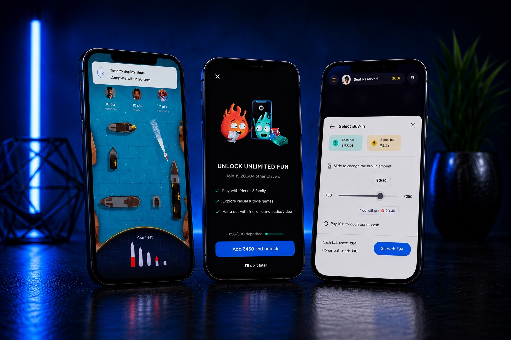
Full-time role · Real-money gaming · 2019-2021
Two years inside a real-money gaming app
I joined Getmega as the company’s second product designer and stayed for two years and two pivots, designing most of the app’s major flows: the core table experience, wallet and payments, tournaments, and the retention systems built to make five million installs come back.
Outcome data: This was a full-time role, so real numbers exist. The install count was public on the Play Store, and the DAU figures are the internal numbers the team worked against while I was there. Where an outcome belongs to the whole team, this study says so. Chapter 06 keeps the score honest.
Getmega was a real-money gaming (iGaming) startup: a platform where players buy in with rupees and play Poker, Rummy, and casual games against each other for real stakes. Money enters through a wallet, lives on the tables, and leaves as winnings, and every screen in between has to earn a player’s trust.
The other case studies on this site are scoped freelance briefs. This one is different. It is two years inside one product, from its early foundations through two changes of direction, which is why it reads less like a single project and more like a product lifecycle.
Two years, two pivots
A freelance brief hands you a scoped problem. A full-time seat hands you a living product. I joined as the second product designer and, for most of my two years, worked as the main conduit between product and engineering: holding the context of the whole app’s architecture while designing its flows screen by screen.
A note on pronouns, because this was team work. “I” in this study means flows I drove end to end: the screens, states, and interactions shown here. “We” means the product managers, engineers, and designers I built them with. Product owned strategy and the metrics; the design of these surfaces was mine.
- T-01Real money on every screen. Deposits, winnings, and bonuses move through almost every flow. A confusing screen here is not a UX nitpick; it is a support ticket or a churned player.
- T-02Two pivots mid-flight. The company changed direction twice while I was there. Flows I had shipped were redesigned, rebuilt, or retired, by me, which is its own kind of design education.
- T-03Daily reviews with the CEO. The design cadence was daily, not weekly. Decisions had to be defensible every single morning.
- T-04A team growing around me. The design team grew from 2 to 10 while I was there. I helped run the hiring pipeline and shape how the team worked.
- T-05Hundreds of screens of surface. The app’s ecosystem ran to roughly 600 screens. Most of what I designed cannot fit in a case study; what follows is the load-bearing work.
Freelance work shows you the launch. A full-time seat shows you what your decisions do to real players, month after month.
Foundations: finding a seat, trusting a wallet
The earliest foundational flow I owned was the core of the product: how a player goes from “I want to play” to sitting at a cash table with chips in front of them. The flow below is the simplified version; the shipped one went through many rounds of redesign as the product evolved around it.
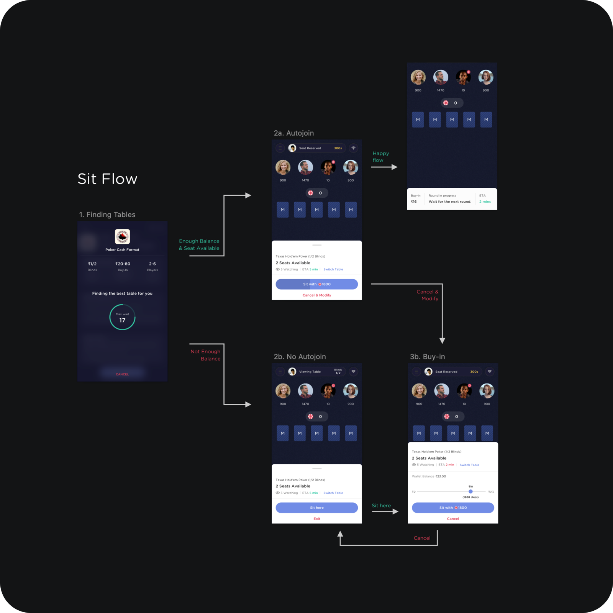
The principle that shaped it: a player should always be moving toward a table. Not enough balance does not dead-end into an error; it routes into the buy-in sheet with the wallet balance and a slider already in hand. Cancel from anywhere lands you somewhere sensible, never nowhere.
On a real-money app the wallet is not a feature. It is the handshake the whole product depends on.
Around the tables sits the money itself. The wallet, add-cash, and history screens were designed to be boringly clear on purpose: obvious CTAs, every number labelled, every state explained.
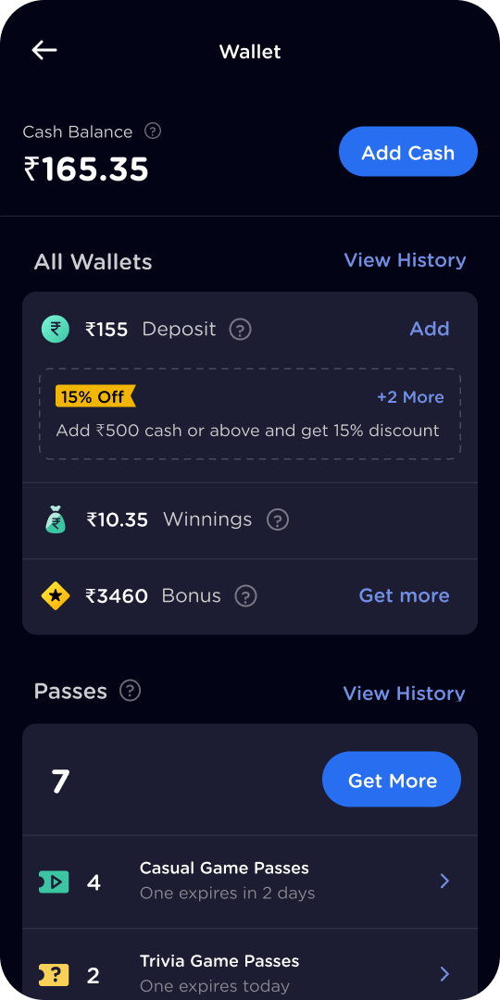
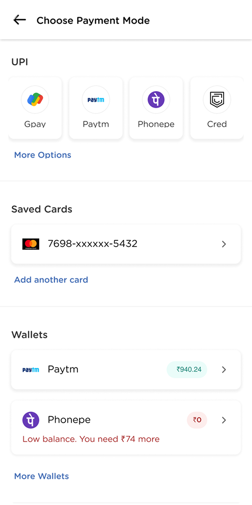
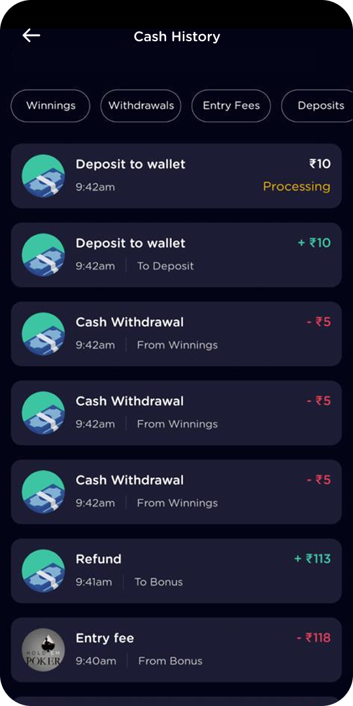
The tournament era
Once cash tables took off, the loudest request came from the pros, the “whales” in poker lingo: multi-table tournaments. MTTs are events, and events have everything a cash table does not: registration windows, countdowns, breaks, blind structures, re-entries, and a leaderboard that matters. I designed the format’s entire surface.
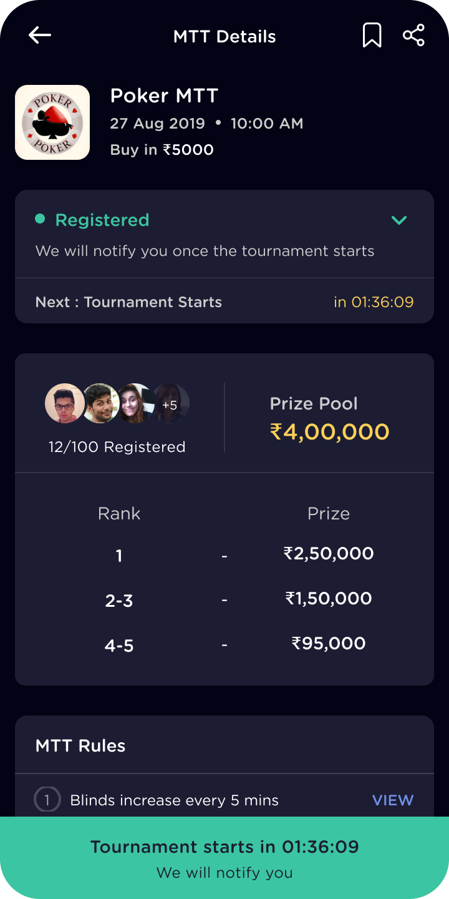
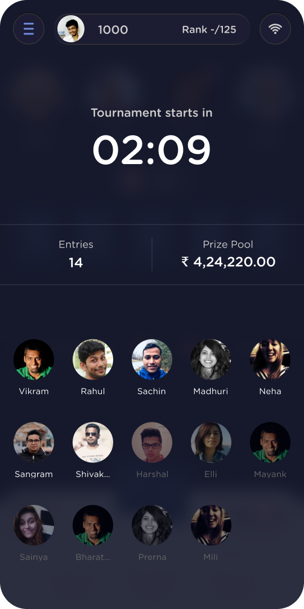
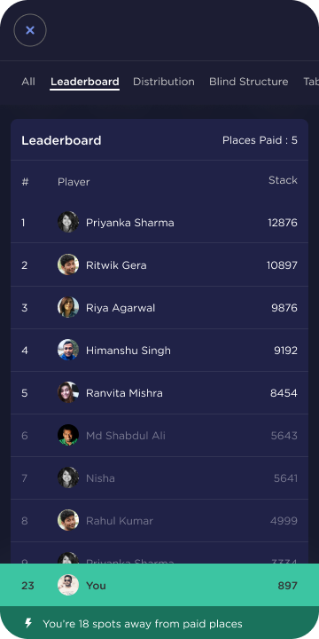
A tournament is mostly waiting, so the real design job is making the waiting legible.
Detail 01
The stats sheet never loses the game
Mid-tournament, players constantly check blinds, rank, and payouts. But poker is turn-based, and a missed turn folds your hand. So when it becomes your turn while you are buried in the stats, a flashing Play pill appears at the top and walks you back to the table.
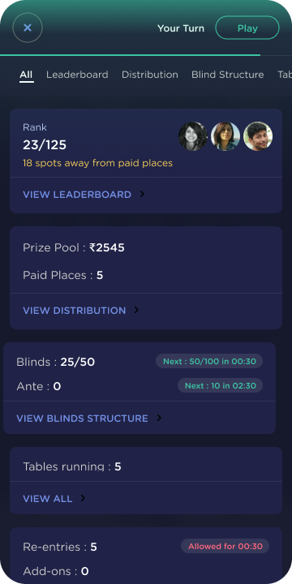
The platform also ran two games in landscape, Rummy and Pool, so none of this could be portrait-only. Every tournament surface was re-laid for landscape rather than letterboxed into it.
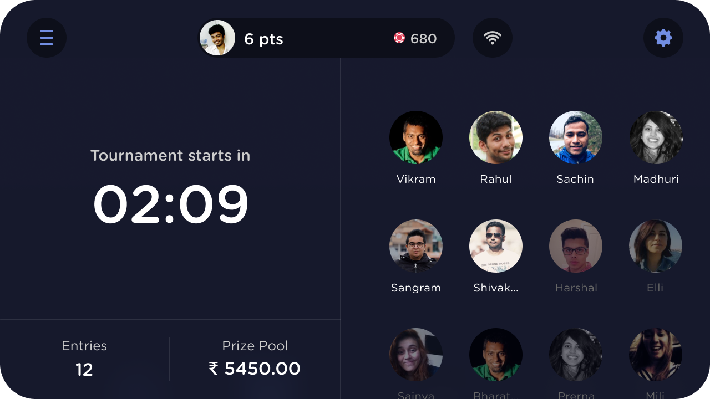
Fig. 09The lobby in landscape. Countdown and stakes take the left column; the field of players takes the right.
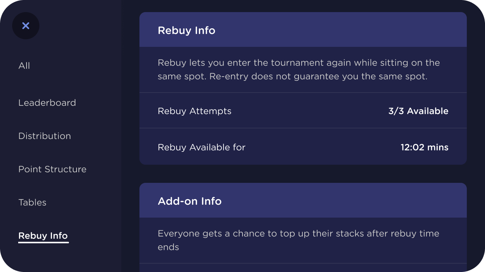
Fig. 10Rules without a rulebook. Rebuy and add-on mechanics explained in one panel, one tap from the table.
The retention push
By this point the app had over 5 million downloads on the Play Store, but weekday DAU hovered around 15k. User research explained the gap: players platform-hop to wherever the tournaments are good and the opponents are beatable. There was no loyalty to lose, because there was nothing to be loyal to.
Five million installs and fifteen thousand weekday players: the app had reach. It did not have a reason to come back.
The product team’s answer was a gamified loyalty program: reward-based tasks tied to gameplay. I designed the system end to end, from the task cards and their hierarchy to the claim moment.
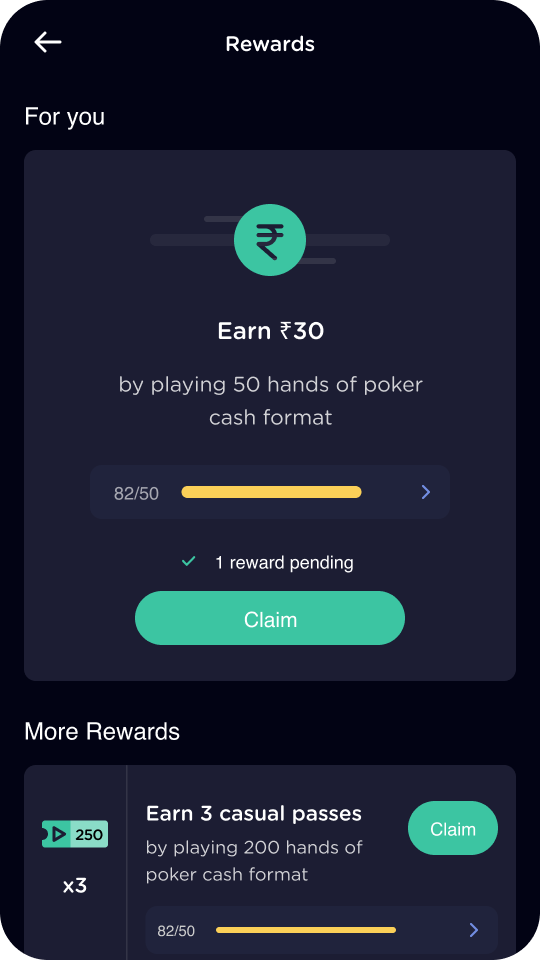
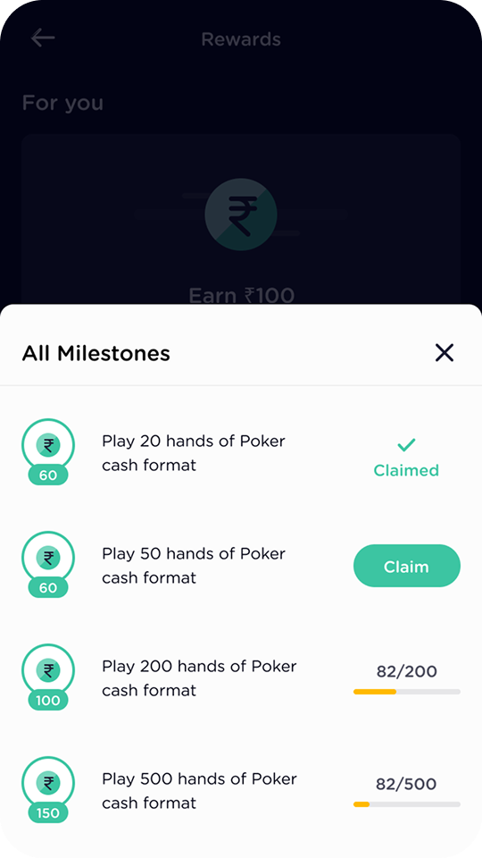
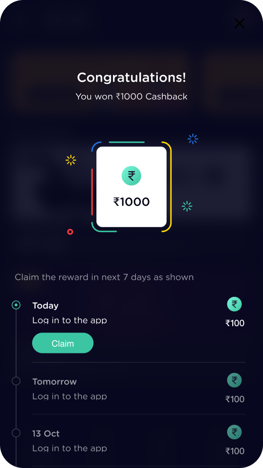
The real number: this feature played a key role in lifting weekday DAU from around 15k to 25k. That lift belongs to the whole team, product, growth, engineering, and design together, but the loyalty loop was the engine, and its design was mine.
The second retention system was scratch cards, and this one was mine from concept onward: I conceptualised the three-tier system and designed the complete flow, not just the screens.
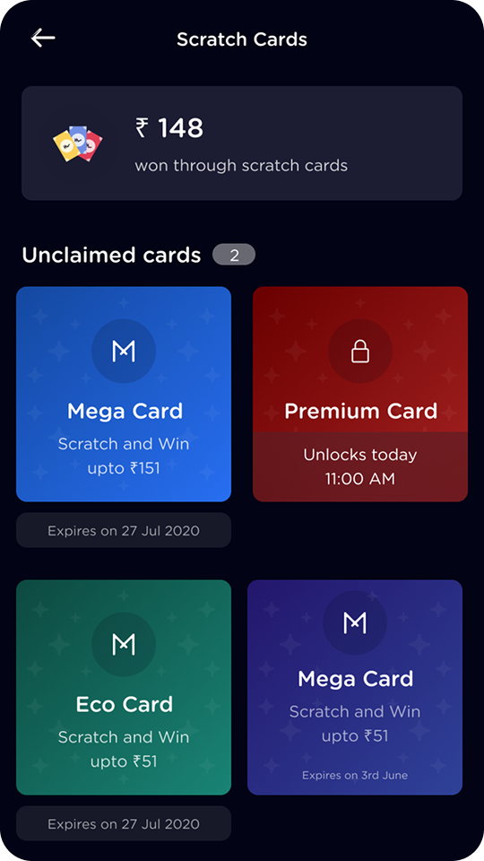
Fig. 14Three tiers, two timers. Eco, Mega, and Premium cards, with unlock times and expiry dates doing the urgency work honestly.
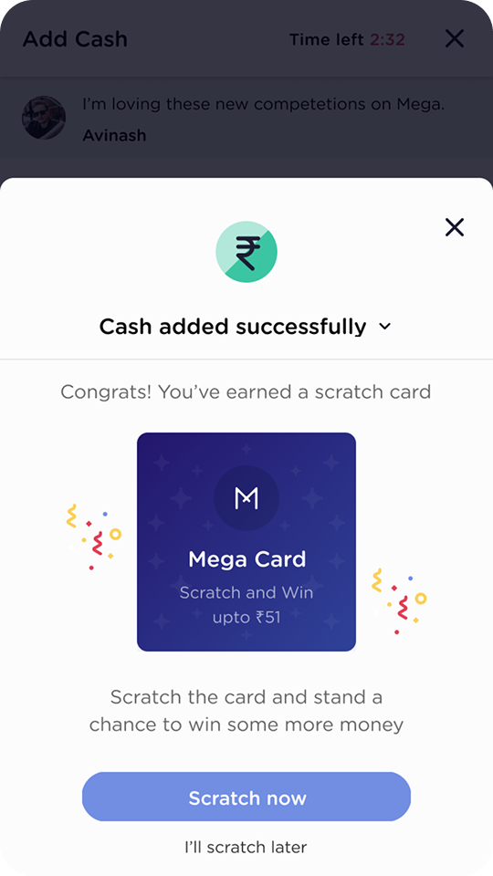
Fig. 15Earned, not given. Cards arrive at natural highs, like a successful deposit, so the reward reinforces the behaviour that produced it.
The craft file
Two years on one product builds a second kind of portfolio: the details. Micro-interactions, state systems, and concept work that never headline a roadmap but decide whether the product feels engineered or assembled. Three pieces earn their place here.
Piece 01
The unobstructed buy-in slider
In a real-money context, players need absolute confidence in a financial input, and standard mobile sliders fail exactly there: the thumb hides the value it is setting. My fix: on press, the value label elevates above the thumb’s footprint with a background blur, so the number being committed is never covered by the finger committing it.
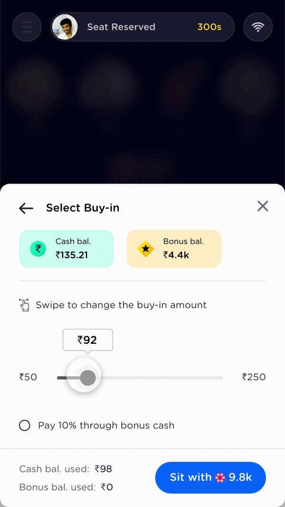
When the input is money, the thumb cannot be allowed to hide the number.
The second piece is systems work. A new leaderboard retention feature needed one card to carry a contest through its whole life, so I built it as a modular system: the core data stays anchored while badges, CTAs, and live trackers swap in around it.
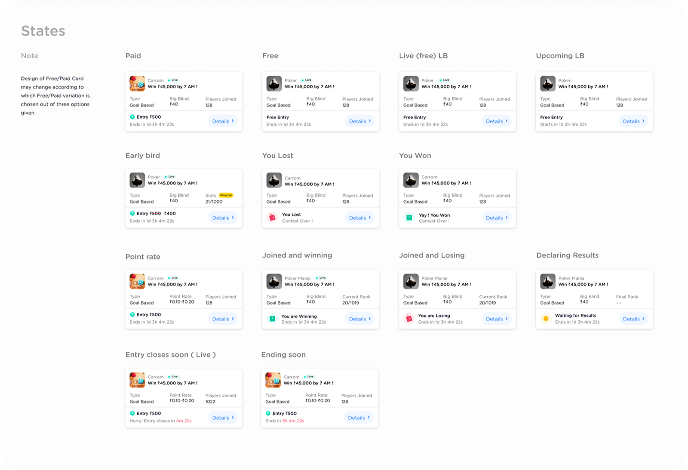
The third piece is concept work: multi-tabling for pros. High-volume players grind several tables at once, which is brutal on a phone. I designed a draggable, chat-head style floating UI, heavily inspired by Messenger: dock the bubble anywhere, get a “your turn” alert when another table needs you, and tap it for a bottom-sheet dashboard of every active game.
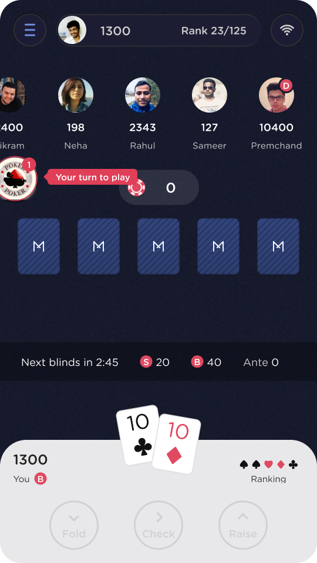
Fig. 18A localized notification hub. The bubble borrows the “new message” pattern, so its meaning is learned before it is ever explained.
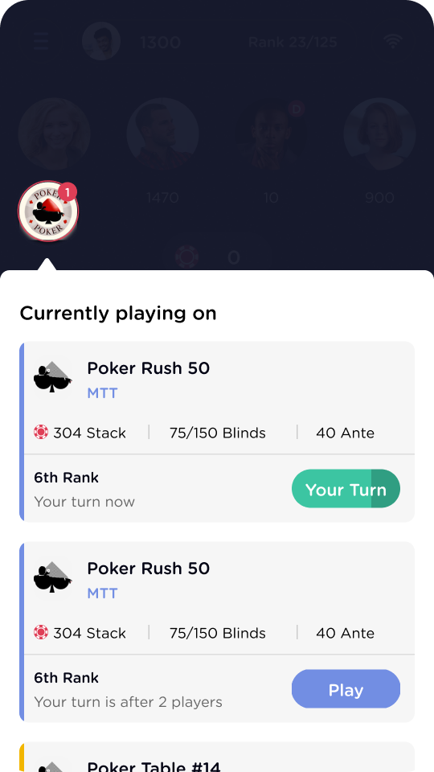
Fig. 19One glance, every table. Stacks, blinds, rank, and whose turn it is, with the urgent table’s CTA doing the deciding.
Honesty about this one: this exact UI remained a conceptual prototype and never shipped. But it stress-tested our interaction patterns, proved mobile poker did not have to be single-screen, and directly paved the way for the pragmatic multi-tabling feature we did ship.
Six screens out of six hundred
When you are the main conduit between product and dev for two years, you end up designing practically everything: referrals, growth experiments, paywalls, empty states, and the connective tissue between them. No one wants to scroll six hundred screens, so here are four more that suggest the rest.
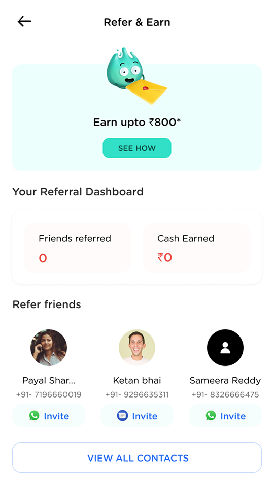
Fig. 20Referrals with zero blank slates. The contact list is the interface; inviting is one tap per friend.
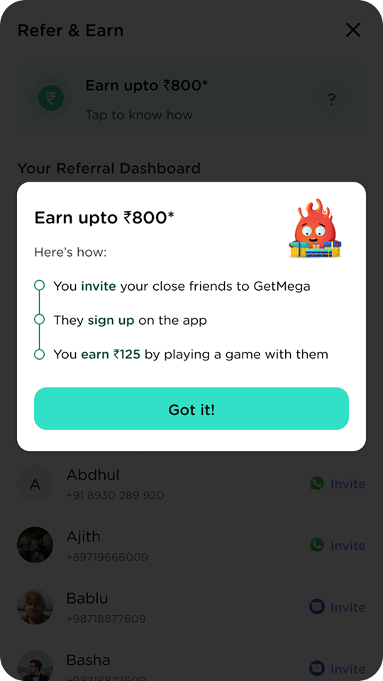
Fig. 21The offer, itemised. Invite, they sign up, you earn by playing together: three steps, no fine print.
And a growth-team experiment I designed the surfaces for: holding some features, especially the social ones, behind a minimum deposit.
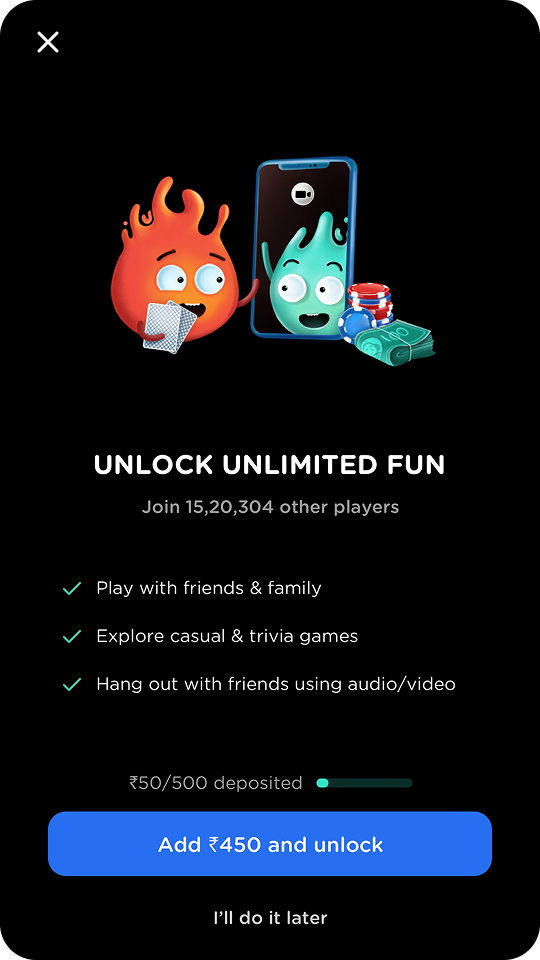
Fig. 22The paywall states its price. A progress bar shows the deposit so far, and the CTA names the exact remaining amount.
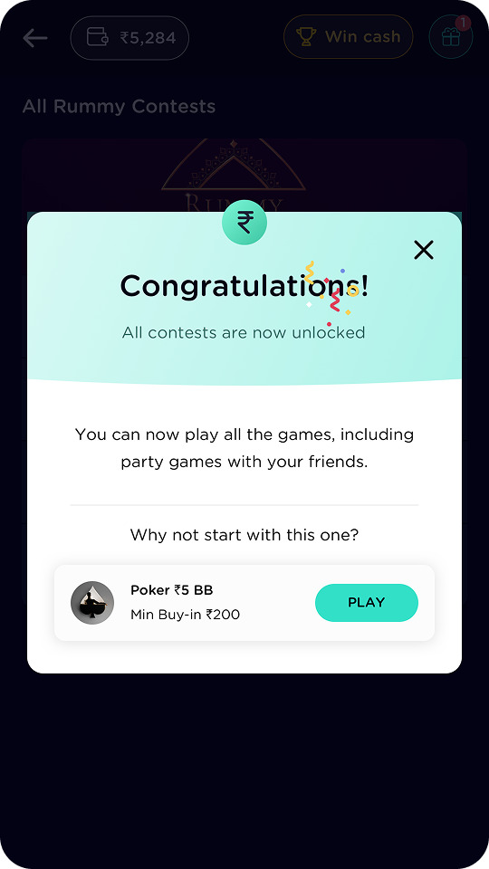
Fig. 23Unlock ends in a next step. The success sheet immediately suggests a first game, so the reward converts into play.
An honest scorecard
Unlike my freelance engagements, this role came with real numbers, so this scorecard can carry outcomes as well as output. The rule stays the same: numbers appear only where I can stand behind them, and team outcomes are labelled as team outcomes.
Owned & shipped
- The core cash-table sit flow, through many rounds of redesign
- Wallet, payments, and cash history
- The complete MTT format, portrait and landscape
- Tasks & Rewards, and the scratch-card system from concept to screens
- Referral, paywall, and growth surfaces across ~600 screens of ecosystem
Real outcomes
- 5M+ downloads on the Play Store during my tenure (public figure)
- Weekday DAU up from ~15k to ~25k after the loyalty program, a team outcome the tasks loop drove (internal figure)
- Two pivots shipped without the design function becoming the bottleneck
- Design team grown from 2 to 10, with me helping run the hiring pipeline
What I’d do differently
- Build the component system earlier: the 13-state card came late, and we paid for its absence as the team grew
- Push retention mechanics and responsible-play guardrails as one brief, not two
- Test the multi-table concept with real pros instead of shelving it at prototype
- Write down design decisions as we made them; two years of context lived in my head and left with me
The most valuable growth happened outside Figma. Holding the context between product and engineering for two years, through daily CEO reviews and two pivots, while stepping into a first leadership role on a growing team, taught me what it actually takes to build a product, and a team, from the ground up. That is the education the freelance work on this site is built on.
Fin.